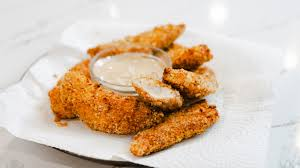

Delicious Tenders
Home

Ingredients required:
These chicken tenders are crispy on the outside and juicy on the inside!
They are quick and easy to make with just a few simple ingredients.
Feel free to swap out the spices to suit your taste,
but keep the basics the same for the best results.
- 1 lb chicken tenders
- 1 cup all-purpose flour
- 2 eggs
- 1 cup breadcrumbs
- 1 tsp garlic powder
- 1 tsp paprika
- Salt and pepper to taste
- Oil for frying
- In a shallow bowl, combine the flour, garlic powder, paprika, salt, and pepper.
- In another bowl, beat the eggs.
- In a third bowl, place the breadcrumbs.
- Dip each chicken tender into the flour mixture, then the beaten eggs, and finally coat it with breadcrumbs.
- Heat oil in a large skillet over medium-high heat.
- Fry the chicken tenders in batches for about 3-4 minutes on each side, or until they are golden brown and cooked through.
- Remove the tenders from the oil and place them on a paper towel-lined plate to drain excess oil.
And now you have delicious, homemade chicken tenders to enjoy! Feel free to share this recipe with your family and friends